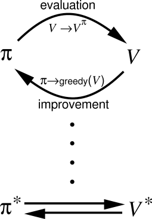
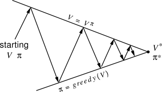
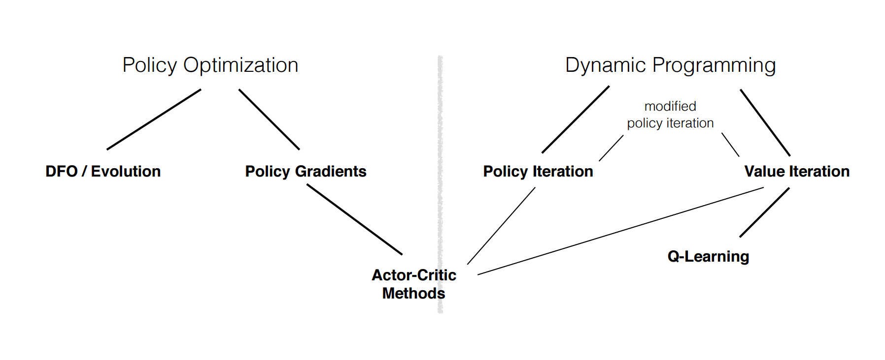
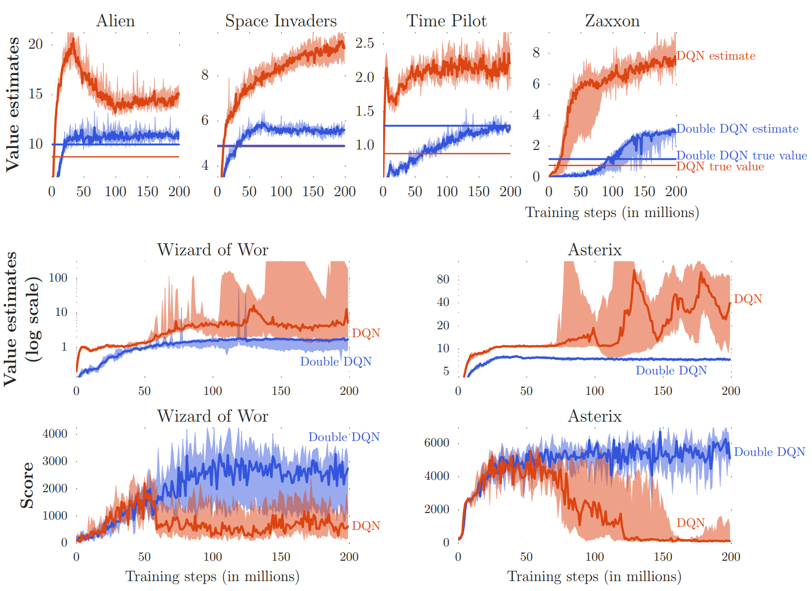
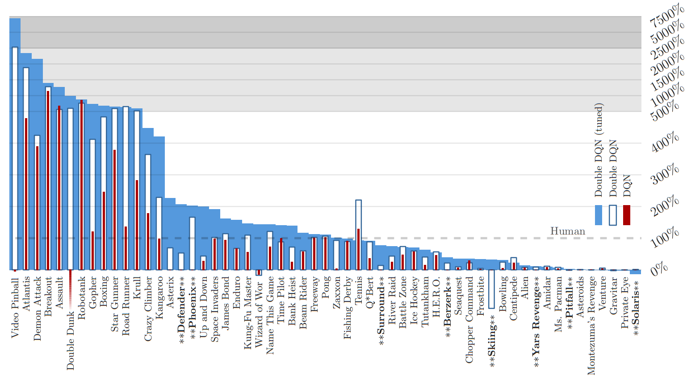
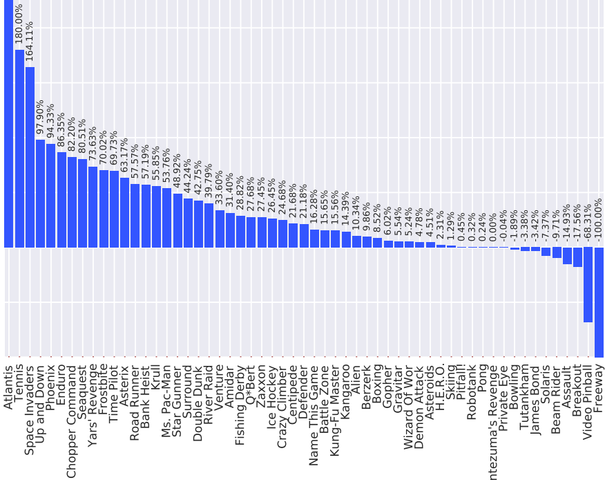
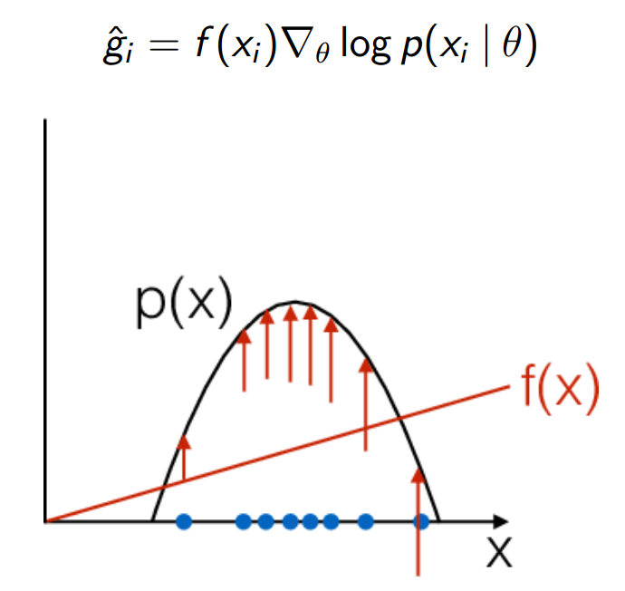
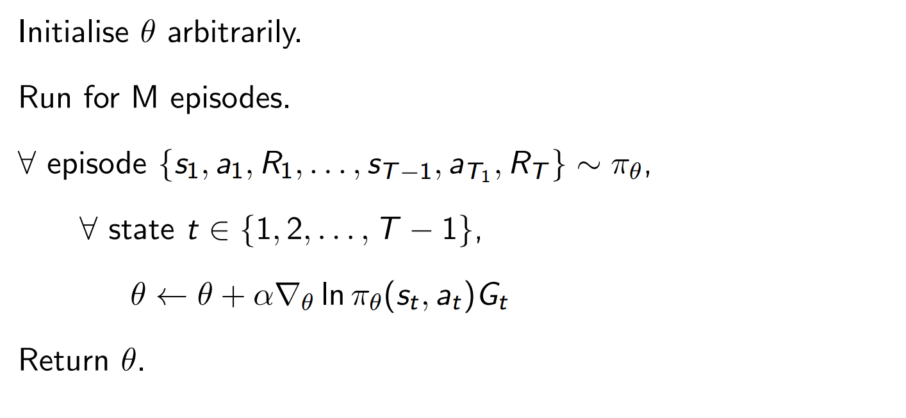
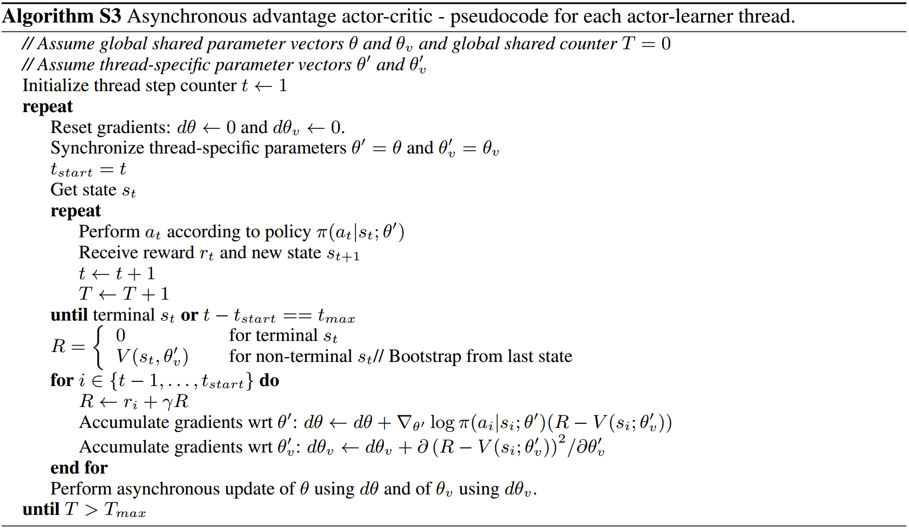

Abordări recente în învățarea prin recompensă
Plan
- Foarte scurtă introducere:
- Formularea problemei în învățarea prin recompensă.
- Procese Markov Decizionale.
- Funcții de utilitate.
- Q-learning.
- Îmbunătățirea estimatorilor $Q(s,a)$.
- Scalabilitate. Introducere în metode bazate pe gradient.
Introducere. Problema învățării prin recompensă.
- Un agent interactionează cu un mediu necunoscut.
- La fiecare pas execută o acțiune și primește o recompensă.
- Problema învățării prin recompensă este construirea unui agent care, în timp, să primească o recompensă cât mai mare.
Introducere. Elemente (I).
- Recompensă $r_t$. Semnal scalar care indică performanța agentului la momentul $t$.
- Acțiune $a_t$. Acțiunea luată de agent la momentul $t$ confom unei:
- distribuții deterministe $a_t = \pi(s_t)$.
- distribuții stocastice $a_t \sim \pi(a_t | s_t)$.
- Observație $o_t$. Starea observabilă a mediului la momentul $t$.
- Stare $s_t$. Starea folosită de agent pentru a lua o acțiune.
Introducere. Elemente (II).
- Obiectiv: Maximizarea recompensei cumulată primită pe termen lung.
- Recompensă viitoare: $G_t = r_{t+1} + r_{t+2} + ... + r_{T}$.
- Recompensă atenuată: $G_t = r_{t+1} + \gamma r_{t+2} + \gamma^2 r_{t+3} + ... + \gamma^{T-1} r_{T}$.
Introducere. Procese Markov Decizionale.
- Un MDP este definit de $(S,A,P)$
- $S$ este spațiul stărilor.
- $A$ este spațiul acțiunilor.
- $P(r,s' | s,a)$ este distribuția de probabilitate a tranzițiilor și a recompenselor.
- Toate stările au proprietatea Markov: $P(s' | s_t) = P(s' | s_0, ... s_t)$
Introducere. Funcții de utilitate.
- Funcția valoare. Măsoară utilitatea unei stări, estimează recompensa viitoare. $$\begin{aligned} V^{\pi}(s) & = \mathbb E_{\pi} [r_{t+1} + \gamma r_{t+2} + \gamma^2 r_{t+3} + ... + \gamma^{T-1} r_{T} | s_t = s, \pi] \\ & = \mathbb E_{\pi} [r_{t+1} + \gamma V^{\pi}(s_{t + 1}) | s_t = s, \pi] \\ \end{aligned}$$
- Funcția valoare-acțiune. Măsoară utilitatea unei stări condiționată de o acțiune.$$Q^{\pi}(s,a) = \mathbb E_{\pi} [r_{t+1} + \gamma r_{t+2} + \gamma^2 r_{t+3} + ... + \gamma^{T-1} r_{T} | s_t = s, a_t = a, \pi]$$
Introducere. Învățarea funcției de utilitate.
- Metode Monte-Carlo. Folosim recompensa cumulată de-a lungul unui episod $G_t$ ca țintă pentru $V(s)$$$V(s_t) \leftarrow V(s_t) + \alpha[G_t - V(s_t)]$$
- Metode bazate pe diferența temporală. Folosim valoarea estimată a stării următoare ca țintă pentru $V(s)$$$V(s_t) \leftarrow V(s_t) + \alpha[r_{t+1} + \gamma V(s_{t+1}) - V(s_t)]$$
Introducere. Q-learning (I).
- Să presupunem că $Q^{\star}(s,a)$ există și este cunoscută. Cum generăm o politică?
- Putem scrie recursiv funcția de utilitate:$$Q^{\star}(s,a) = \mathbb E[r_{t+1} + \gamma V^{\star}(s_{t+1})]$$
- O politică optimă este luarea celei mai bune acțiuni la fiecare pas, $\pi(s) = \mathop{\arg\max}_a Q(s,a)$:$$Q^{\star}(s,a) = \mathbb E[r_{t+1} + \gamma \mathop{\arg\max}\limits_{a_{t+1}} Q^{\star}(s_{t+1},a_{t+1})]$$
Introducere. Q-learning (II).
- Regula de actualizare: $$Q(s_t, a_t) \leftarrow Q(s_t, a_t) + \alpha[r_{t+1} + \gamma \mathop{\arg\max}\limits_{a_{t+1}} Q(s_{t+1},a_{t+1}) - Q(s_t, a_t)]$$
- Generalized Policy Iteration:

Introducere. Abordări generale.John Schulmann
1. Îmbunătățirea estimatorilor Q(s,a)
- Supraevaluarea acțiunilor.
van Hasselt, 2015 - Deep Reinforcement Learning with Double Q-learning - Dezambiguizarea V(s,a) și Q(s,a).
Wang, 2015 - Dueling Network Architectures for Deep Reinforcement Learning
1.1 Supraevaluarea acțiunilor. Cauze
Supraevaluare a acțiunilor alese în detrimentul celorlalte acțiuni posibile cauzată de:
- Erori aleatoare de estimare, inevitabile la începutul antrenării.
- Operatorul $max$ este deplasat pozitiv.
- Inexpresibilitatea estimatorului.
- Non-staționaritatea mediului.
1.1 Supraevaluarea acțiunilor. Zgomot
Să presupunem că estimatorul Q(s,a) este corupt de zgomot cu medie 0.

(Thrun, Scwartz, 1992)
1.1 Supraevaluarea acțiunilor. Model
Actualizare:
- $\theta_{t+1} = \theta_t + \alpha(Y_t^Q - Q(s_t, a_t; \theta_t))\nabla_{\theta_t}Q(s_t,a_t;\theta_t).$
- $Y_t^{\text{DQN}} \equiv r_{t+1} + \gamma \,\max\limits_{a} \, Q(s_{t+1}, a; \theta_t^-).$
- $Y_t^{doubleDQN} \equiv r_{t+1} + \gamma \, Q(s_{t+1}, \mathop{\arg\,\max}\limits_{a} Q(s_{t+1}, a; \theta_t);\theta_t^\prime)$
- DQN este susceptibil la supraevaluare deoarece maximizează atât la selectarea cât și la evaluarea acțiunii.
- Double Q-learning evaluează tot acțiunea luată de politică, dar folosind $\theta_t^\prime$.
1.1 Experimente
1.1 Rezultate
1.2 Dueling Network Architectures for Deep Reinforcement Learning
Wang, 2015
1.2 Dezambiguizarea Q(s,a) de V(s)

- Observă că există stări cu valori Q(s,a) foarte apropiate...
- ... și că nu este necesară estimarea valorii fiecărei acțiuni.
- Dueling DQN învață $V(s)$, fără să fie nevoită să învețe efectul fiecărei acțiuni în starea respectivă.
1.2 Dezambiguizarea Q(s,a) de V(s)
Putem deriva două cantități în relație cu $Q^{\pi}(s,a) = \mathbb E\,[R_t | s_t = s, a_t = a, \pi]$:
- Utilitatea unei stări:
$V^{\pi}(s) = \mathbb E_{a \sim \pi(s)} \,[Q^{\pi}(s,a)]$ - Importanța acțiunilor relativ de $V(s)$:
$A^{\pi}(s,a) = Q^{\pi}(s,a) - V^{\pi}(s)$
1.2 Dezambiguizarea Q(s,a) de V(s)
Pentru fiecare stare, urmând acțiuni conform politicii:
- $V^\pi(s)$ este valoarea totală a recompensei așteptată din pasul respectiv.
- $A^\pi(s,a)$ este măsura în care alegerea acțiunii $a$ relativ la celelalte acțiuni duce la obținerea recompensei așteptate.
1.2 Dezambiguizarea Q(s,a) de V(s)
După convergența la politica optimă:
- $V^\pi(s)$ este valoarea adevărată a stării $s$.
- $A^\pi(s,a) = 0$ pentru acțiunea optimă $a$
1.2 Model. Functia de cost

Naiv: $Q(s,a; \theta, \alpha, \beta) = V(s;\theta, \beta) + A(s,a;\theta, \alpha)$
Însă dat fiind $Q$ nu putem afla $A$ și $V$ unice.
1.2 Model. Functia de cost
Soluția este să forțăm $A(s,a)$ să fie 0 pentru acțiunea luată:$Q(s,a; \theta, \alpha, \beta) = V(s;\theta, \beta) + (A(s,a;\theta, \alpha) - \mathop{\max}\limits_{a'\in |\mathcal A|} A(s,a';\theta, \alpha))$
În practică:$Q(s,a; \theta, \alpha, \beta) = V(s;\theta, \beta) + (A(s,a;\theta, \alpha) - \frac{1}{|\mathcal A|}\Sigma_{a'}A(s,a';\theta, \alpha))$
1.2 Model. Avantaje
- Convergență mai rapidă deoarece $V(s)$ este actualizat la fiecare pas.
- Performanță mai mare cu creșterea numărului de acțiuni.
- Discriminare mai bună între acțiuni.
1.2 Rezultate
2. Scalabilitate
- Mnih, 2016- Asynchronous Methods for Deep Reinforcement Learning
- Nevoia de paralelizare pentru obiective mai complexe
- Extinderea la algortimi on-policy: Sarsa, metode în n-pași, actor-critic.
2. On vs Off policy
- off-policy - realizează pasul de actualizare maximizând valoarea stării următoare. Estimează recompensa așteptată cu o politică de maximizare peste acțiuni, alta decât cea urmată ($\epsilon-\text{greedy}$).
- on-policy - realizează pasul de actualizare folosind valoarea Q a stării următoare conform politicii urmate. Estimează recompensa așteptată presupunând că politica actuală continuă să fie urmată.
2. Gradientul valorii așteptate
În general, dacă $f(x)$ este funcția de scor sub o distribuție parametrizată $p(x | \theta)$, putem obține astfel gradientul valorii așteptate:
$$\begin{aligned} \nabla_{\theta} \mathbb E_{x \sim p(x \mid \theta)} [f(x)] &= \nabla_{\theta} \sum_x p(x \mid \theta) f(x) & \text{definiția valorii așteptate} \\ & = \sum_x \nabla_{\theta} p(x \mid \theta) f(x) & \\ & = \sum_x p(x \mid \theta) \frac{\nabla_{\theta} p(x \mid \theta)}{p(x \mid \theta)} f(x) \\ & = \sum_x p(x \mid \theta) \nabla_{\theta} \log p(x \mid \theta) f(x) & \text{log-trick: } \nabla_{\theta} \log(z) = \frac{1}{z} \nabla_{\theta} z \\ & = \mathbb E_x[f(x) \nabla_{\theta} \log p(x \mid \theta) ] & \text{valoare așteptată} \end{aligned}$$
2. Gradientul valorii așteptate. Intuiții
2. Gradientul valorii așteptate. Exemplu REINFORCE
2. Problema varianței.
- Dacă $f(x) \ge 0, \forall x_i$, actualizarea parametrilor pe baza gradientului va crește densitatea de probablitate pentru orice $x_i$
- Putem însă extrage o funcție etalon:
$$ \begin{aligned} \nabla_{\theta} \mathbb E_{x \sim p(x \mid \theta)} [f(x)] &=\nabla_{\theta} \mathbb E_x [f(x) - b] \\ & = \mathbb E_x[\nabla_{\theta} \log p(x) (f(x)-b)] \end{aligned} $$
- Un candidat natural pentru acest etalon este funcția avantaj.
2. Actor-Critic
- $f(x)$ este o estimare a recompensei viitoare sau un eșantion.
- $p(x|\theta)$ este un model pentru politica agentului $\pi(s,a | \theta).$
- când $f(x)$ estimează utilitatea unei perechi stare-acțiune spunem că folosim un critic pentru actualizarea politicii.
2. Actor-Critic
Aceste metode țin două seturi de parametri:
- Criticul actualizează parametrii $\theta_v$
- Actorul actualizează parametrii politicii $\theta$, în direcția sugerată de critic.
2. Metode în n-pași
- Se folosesc de întreaga traiectorie episodică pentru actualizarea politicii și a funcției de utilitate a perechii stare-acțiune.
- Actualizează $Q(s,a)$ către recompensa degradată $R_t = r_t + \gamma r^{t+1} + \gamma^{n-1}r_{t+n-1} + \max_a \gamma^n Q(s_{t+n}, a_{t+n})$
- ... distribuind recompensa pe toată întinderea unei traiectorii.
2. Algoritmul A3C
2. „Advantage Actor-Critic”
Combinând funcția avantaj cu metoda n-pași, actualizarea parametrilor politicii poate fi văzută astfel:$$\nabla_\theta log \pi(a_t | s_t, \theta) A(s_t, a_t | \theta, \theta_v), $$
unde $A(s_t, a_t | \theta, \theta_v)$ este estimarea funcției avantaj dată de:$$\sum_{i=0}^{k-1} \gamma^i r_{t+1} + \gamma^k V(s_{t+k} ; \theta_v) - V(s_t; \theta) $$